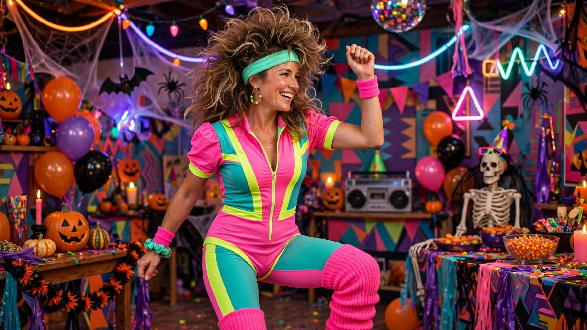

80s Halloween Costume Ideas 2026: Retro Looks That Still Slap
Published October 17, 2026 · Updated October 17, 2026 · By EventBuzz Team · 4 min read

Big hair, bigger shoulder pads, and neon everything: the 80s remain Halloween’s most fun decade to wear. The looks are instantly recognisable, cheap to thrift, and perfect for groups — and 2026’s retro wave keeps them fresher than ever.
This guide has the best 80s Halloween costume ideas: icons, aerobics looks, movie characters, and group themes straight out of 1985.
80s Icons
- Madonna: lace gloves, layered necklaces, tulle skirt, teased hair. Like a virgin, like a legend.
- David Bowie: lightning bolt face paint and a sharp suit. Ziggy forever.
- Freddie Mercury: white tank, jeans, moustache, mic stand. An all-timer.
- Cyndi Lauper: clashing colours, wild hair, endless bracelets. Girls just wanna have fun.
- Run DMC: tracksuits, gold chains, fedoras. Walk this way.
- Princess Diana (80s): the revenge-dress era or the Sloane Ranger look — elegant retro.
Aerobics & Workout Looks
The easiest 80s costume ever: neon leotard or bright t-shirt, leggings, leg warmers, sweatband, and big hair. Add wristbands and you are ready for the “workout video” photo. Works solo, pairs beautifully (his-and-hers Jane Fondas), and scales to whole groups.
- Thrift it: charity shops overflow with 80s workout gear every October.
- Hair is half the costume: crimp it, tease it, or wig it. Volume is non-negotiable.
- Accessories: jelly bracelets, slap bands, and oversized sunglasses.
80s Movie Characters
- Maverick (Top Gun): bomber jacket, aviators, need for speed.
- The Ghostbusters: khaki jumpsuits with a cardboard proton pack. Group gold.
- Ferris Bueller: vest, patterned shirt, and a day-off attitude.
- Heathers: coloured blazers and scrunchies for the ultimate mean-girl group.
- Back to the Future Marty: red puffer vest, denim jacket, skateboard.
- Beetlejuice: striped suit, wild hair, “it’s showtime.”
Group 80s Themes
- Hair metal band: each friend picks an instrument (cardboard guitars encouraged).
- Arcade games: Pac-Man, ghosts, Tetris blocks — colourful and clever.
- 80s prom: puffy dresses, pastel tuxes, giant corsages. Awkward photos mandatory.
- Workout class: a whole aerobics class with one “instructor” leading.
Pro tip: 80s costumes look best in groups — the decade was maximalist, and so should you be.
Frequently Asked Questions
Where can I find cheap 80s clothes for Halloween?
Thrift and charity shops are full of 80s pieces in October — neon tops, windbreakers, and high-waisted jeans. Ask specifically; staff often set aside retro stock for Halloween.
What is the easiest 80s costume?
The aerobics look: bright top, leggings, leg warmers, sweatband. Everything is available cheaply and it reads instantly.
How do I do 80s hair for Halloween?
Tease with a fine comb and lots of hairspray, crimp for texture, or buy an inexpensive wig. Side ponytails with scrunchies are the low-effort classic.
What 80s group costume is best for 4 friends?
Ghostbusters (four proton packs) or an 80s hair-metal band. Both photograph brilliantly and everyone gets a distinct role.
Conclusion
The 80s were loud, proud, and gloriously over the top — exactly what Halloween demands. Tease that hair, crank the neon, and party like it’s 1985.
More retro inspiration in our 90s, thrift, and group costume guides.
Share this guide with friends and family — and have a fantastic Halloween 2026.
80s Costume Picks
Neon, wigs and retro accessories.


Links take you to Temu, where shipping and delivery details are shown. Prices can change.